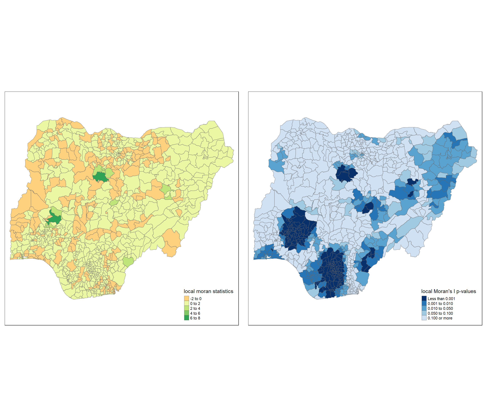

pacman::p_load(sf, spdep, tmap, tidyverse, funModeling)Take-home Exercise 1:Geospatial Analytics for Social Good
Overview
In this take-home exercise, we will apply appropriate global and local measure of spatial association techniques we have learned so far to reveal the spatial patterns of non-functional water points in Nigeria.
The Data
2 data sources are used in this study:
- Water point geospatial data - obtained from WPDx Global Data Repositories - The repository is a cloud based data library that stores the water point related data from rural areas at the water point or small water scheme level collected by the WPDx project.
- Nigeria LGA boundary data - Nigeria Level-2 Administrative Boundary (also known as Local Government Area) polygon features GIS data downloaded from geoBoundaries website.
Getting Started
We start by ensuring we have all the required R packages installed and loaded. The few key packages used and their purposes as follows:
sf - import geospatial data
tidyverse - perform data science task such as importing (using readr), manipulating (using tidyr) and transforming data (using dplyr).
spdep
compute Global Spatial Autocorrelation (GSA) statistics
plot Moran scatter plot
compute and plot spatial correlogram
compute Local Indicator of Spatial Association (LISA) statistics for detecting clusters and outliers
compute Getis-Ord’s Gi-statistics for detecting hot spot or/and cold spot area
tmap - visualize the analysis output
funModeling - for quick Exploratory Data Analysis.
Importing Geospatial Data
Importing water point geospatial data
wp <- st_read(dsn = "geodata",
layer = "geo_export",
crs = 4326) %>%
filter(clean_coun == "Nigeria") Next, we save the extracted sf data table into an output file in rds data format and save in the Geodata file.
write_rds(wp,"geodata/wp_nga.rds")Importing Nigeria LGA boundary data
nga <- st_read(dsn = "geodata",
layer = "geoBoundaries-NGA-ADM2",
crs = 4326)Data Wrangling
We see many NA in the status_cle field, below code chunk is used to recode all NA status into Unknown.
wp_nga <- read_rds("geodata/wp_nga.rds") %>%
mutate(status_cle = replace_na(status_cle, "Unknown"))Using freq() of funModeling package to display the distribution of status_cle field.
freq(data=wp_nga,
input = 'status_cle')Extracting Water Point Data
Extracting functional water point
If we look at the first EDA results, we know that there are a few that falls under the ‘functional’ category.
wpt_functional <- wp_nga %>%
filter(status_cle %in%
c("Functional",
"Functional but not in use",
"Functional but needs repair"))Again we do a quick EDA to only look at the functional water points. Same results as above but only showing the functional ones.
freq(data=wpt_functional,
input = 'status_cle')Extracting non-functional water point
wpt_nonfunctional <- wp_nga %>%
filter(status_cle %in%
c("Non-Functional",
"Non-Functional due to dry season",
"Abandoned/Decommissioned",
"Abandoned",
"Non functional due to dry season"))freq(data=wpt_nonfunctional,
input = 'status_cle')Extracting water with unknown status
wpt_unknown <- wp_nga %>%
filter(status_cle %in%
c("Unknown"))Looking at the data, the results is the same as the first EDA, there are 10656 water point with unknown status.
Performing Point-in-Polygon Count
nga_wp <- nga %>%
mutate(`total wpt` = lengths(
st_intersects(nga, wp_nga))) %>%
mutate(`wpt functional` = lengths(
st_intersects(nga, wpt_functional))) %>%
mutate(`wpt non-functional` = lengths(
st_intersects(nga, wpt_nonfunctional))) %>%
mutate(`wpt unknown` = lengths(
st_intersects(nga, wpt_unknown)))Saving the Analytical Data Table
nga_wp <- nga_wp %>%
mutate(pct_functional = `wpt functional`/`total wpt`) %>%
mutate(`pct_non-functional` = `wpt non-functional`/`total wpt`)Saving the sf data table with analysis into rds format.
write_rds(nga_wp, "geodata/nga_wp.rds")Visualizing the spatial distribution of water points
nga_wp <- read_rds("geodata/nga_wp.rds")
total <- qtm(nga_wp, "total wpt")
wp_functional <- qtm(nga_wp, "wpt functional")
wp_nonfunctional <- qtm(nga_wp, "wpt non-functional")
unknown <- qtm(nga_wp, "wpt unknown")
tmap_arrange(total, wp_functional, wp_nonfunctional, unknown, asp=1, ncol=2)Projection Transformation
We are transforming the original data from geographic coordinate system to projected coordinate system . This is because geographic coordinate system is not appropriate if the analysis need to use distance or/and area measurement.
nga_wp26391 <- st_transform(nga_wp,26391)To check the CSR again by using below code chunk.
st_crs(nga_wp26391)Coordinate Reference System:
User input: EPSG:26391
wkt:
PROJCRS["Minna / Nigeria West Belt",
BASEGEOGCRS["Minna",
DATUM["Minna",
ELLIPSOID["Clarke 1880 (RGS)",6378249.145,293.465,
LENGTHUNIT["metre",1]]],
PRIMEM["Greenwich",0,
ANGLEUNIT["degree",0.0174532925199433]],
ID["EPSG",4263]],
CONVERSION["Nigeria West Belt",
METHOD["Transverse Mercator",
ID["EPSG",9807]],
PARAMETER["Latitude of natural origin",4,
ANGLEUNIT["degree",0.0174532925199433],
ID["EPSG",8801]],
PARAMETER["Longitude of natural origin",4.5,
ANGLEUNIT["degree",0.0174532925199433],
ID["EPSG",8802]],
PARAMETER["Scale factor at natural origin",0.99975,
SCALEUNIT["unity",1],
ID["EPSG",8805]],
PARAMETER["False easting",230738.26,
LENGTHUNIT["metre",1],
ID["EPSG",8806]],
PARAMETER["False northing",0,
LENGTHUNIT["metre",1],
ID["EPSG",8807]]],
CS[Cartesian,2],
AXIS["(E)",east,
ORDER[1],
LENGTHUNIT["metre",1]],
AXIS["(N)",north,
ORDER[2],
LENGTHUNIT["metre",1]],
USAGE[
SCOPE["Engineering survey, topographic mapping."],
AREA["Nigeria - onshore west of 6°30'E, onshore and offshore shelf."],
BBOX[3.57,2.69,13.9,6.5]],
ID["EPSG",26391]]Computing distance based neighbors
If we look at the earlier graph plot of the spatial distribution of water points using the combined data frame we can see that there is a large variation in polygon size (some large and some very small), hence we will use fixed distance method to ensure a consistent scale of analysis.
Determine the cut-off distance
To calculate the upper limit for distance band we need the region points coordinates.
We start with getting longitude values, we map st_centroid() over the geometry column of us.bound and access the longitude value through double bracket notation [[]] and 1. For latitude we will replace the same but with [[2]].
longitude <- map_dbl(nga_wp$geometry, ~st_centroid(.x)[[1]])latitude <- map_dbl(nga_wp$geometry, ~st_centroid(.x)[[2]])We use cbind() to put longitude and latitude into the same object.
coords <- cbind(longitude, latitude)Examining the first few observations to see if things look correct:
head(coords) longitude latitude
[1,] 7.372450 5.113107
[2,] 7.352131 5.083219
[3,] 13.322900 13.428835
[4,] 6.847325 8.825812
[5,] 7.771541 5.022061
[6,] 8.219654 6.259845k1 <- knn2nb(knearneigh(coords))
k1dists <- unlist(nbdists(k1, coords, longlat = TRUE))
summary(k1dists) Min. 1st Qu. Median Mean 3rd Qu. Max.
2.662 12.815 20.242 22.031 27.706 71.661 The summary shows that the largest first nearest neighbor distance is 71.66 km, so using this as the upper threshold gives certainty that all units will have at least one neighbor.
Computing fixed distance weight matrix
wm_d72 <- dnearneigh(coords, 0, 72, longlat = TRUE)
wm_d72Neighbour list object:
Number of regions: 774
Number of nonzero links: 18112
Percentage nonzero weights: 3.023323
Average number of links: 23.40052 Plotting fixed distance weight matrix
plot(nga_wp$geometry, border="lightgrey")
plot(wm_d72, coords, add=TRUE)
plot(k1, coords, add=TRUE, col="red", length=0.08)Global Spatial Autocorrelation
Row standardized weight matrix
Next, we need to assign weights to each neighboring polygon.
rswm_d72 <- nb2listw(wm_d72,
style="W",
zero.policy = TRUE)
rswm_d72Characteristics of weights list object:
Neighbour list object:
Number of regions: 774
Number of nonzero links: 18112
Percentage nonzero weights: 3.023323
Average number of links: 23.40052
Weights style: W
Weights constants summary:
n nn S0 S1 S2
W 774 599076 774 129.7549 3127.064Global Spatial Autocorrelation: Moran’s I
Below code chunk performs Moran’s I statistical testing.
moran.test(nga_wp$`wpt non-functional`,
listw=rswm_d72,
zero.policy = TRUE,
na.action=na.omit)
Moran I test under randomisation
data: nga_wp$`wpt non-functional`
weights: rswm_d72
Moran I statistic standard deviate = 22.451, p-value < 2.2e-16
alternative hypothesis: greater
sample estimates:
Moran I statistic Expectation Variance
0.325826819 -0.001293661 0.000212293 Computing Monte Carlo Moran’s I
This code chunk performs permutation test for Moran’s I statistics. A total of 1000 simulation will be performed.
set.seed(1234)
bperm= moran.mc(nga_wp$`wpt non-functional`,
listw=rswm_d72,
nsim=999,
zero.policy = TRUE,
na.action=na.omit)
bperm
Monte-Carlo simulation of Moran I
data: nga_wp$`wpt non-functional`
weights: rswm_d72
number of simulations + 1: 1000
statistic = 0.32583, observed rank = 1000, p-value = 0.001
alternative hypothesis: greaterVisualizing Monte Carlo Moran’s I
We are plotting the distribution of the statistical values as a histogram to examine the test statistics in greater detail.
mean(bperm$res[1:999])[1] -0.001722881var(bperm$res[1:999])[1] 0.0001990597summary(bperm$res[1:999]) Min. 1st Qu. Median Mean 3rd Qu. Max.
-0.041417 -0.011561 -0.002114 -0.001723 0.007691 0.043933 hist(bperm$res,
freq=TRUE,
breaks=20,
xlab="Simulated Moran's I")
abline(v=0,
col="red") Cluster and Outlier Analysis
Local Indicators of Spatial Association (LISA) are statistics that evaluate the existence of clusters in the spatial arrangement of a given variable. We will learn how to apply LISA to detect cluster and outlier in Hunan’s 2012 GDPPC.
Computing local Moran’s I
fips <- order(nga_wp$shapeName)
localMI <- localmoran(nga_wp$`wpt non-functional`, rswm_d72)
head(localMI) Ii E.Ii Var.Ii Z.Ii Pr(z != E(Ii))
1 0.361394136 -9.995243e-04 1.128237e-02 3.4117747 0.0006454144
2 0.074414950 -4.092463e-05 4.705097e-04 3.4325327 0.0005979717
3 1.258199847 -1.627684e-03 6.280738e-01 1.5896655 0.1119102304
4 -0.006652507 -5.427505e-05 4.151689e-03 -0.1024036 0.9184363392
5 0.082615173 -2.590965e-04 3.325093e-03 1.4372021 0.1506605779
6 0.006672593 -1.538445e-07 5.523369e-06 2.8392431 0.0045220690The meaning of respective columns in the results:
Ii: the local Moran’s I statistics
E.Ii: the expectation of local Moran statistic under the randomisation hypothesis
Var.Ii: the variance of local Moran statistic under the randomisation hypothesis
Z.Ii: the standard deviation of local Moran statistic
Pr(): the p-value of local Moran statistic
Mapping the local Moran’s I
nga_wp.localMI <- cbind(nga_wp,localMI) %>%
rename(Pr.Ii = Pr.z....E.Ii..)Mapping local Moran’s I values
tm_shape(nga_wp.localMI) +
tm_fill(col = "Ii",
style = "pretty",
palette = "RdBu",
title = "local moran statistics") +
tm_borders(alpha = 0.5)Mapping local Moran’s I p-values
tm_shape(nga_wp.localMI) +
tm_fill(col = "Pr.Ii",
breaks=c(-Inf, 0.001, 0.01, 0.05, 0.1, Inf),
palette="-Blues",
title = "local Moran's I p-values") +
tm_borders(alpha = 0.5)Mapping both local Moran’s I values and p-values
localMI.map <- tm_shape(nga_wp.localMI) +
tm_fill(col = "Ii",
style = "pretty",
title = "local moran statistics") +
tm_borders(alpha = 0.5)
pvalue.map <- tm_shape(nga_wp.localMI) +
tm_fill(col = "Pr.Ii",
breaks=c(-Inf, 0.001, 0.01, 0.05, 0.1, Inf),
palette="-Blues",
title = "local Moran's I p-values") +
tm_borders(alpha = 0.5)
tmap_arrange(localMI.map, pvalue.map, asp=1, ncol=2)
Hot Spot and Cold Spot Area Analysis
Localised spatial statistics can be used to detect hot spot and cold spot areas. ‘Hot spot’ generally means a region or value that is higher relative to its surrounding.
Getis and Ord’s G-statistics
This statistics look at neighbors within a defined proximity to identify high or low values cluster spatially. 3 steps for this analysis.
Derive spatial weight matrix
Compute Gi statistics
Mapping Gi statistics
Given we calculated the fixed distance weight matrix earlier,
wm72_lw <- nb2listw(wm_d72, style = 'B')
summary(wm72_lw)Characteristics of weights list object:
Neighbour list object:
Number of regions: 774
Number of nonzero links: 18112
Percentage nonzero weights: 3.023323
Average number of links: 23.40052
Link number distribution:
1 2 3 4 5 6 7 8 9 10 11 12 13 14 15 16 17 18 19 20 21 22 23 24 25 26
5 8 12 21 32 35 33 35 28 36 25 21 19 23 16 14 10 13 15 17 16 11 13 10 6 12
27 28 29 30 31 32 33 34 35 36 37 38 39 40 41 42 43 44 45 46 47 48 49 50 51 52
12 5 16 13 12 7 9 9 12 7 12 15 13 9 10 4 5 4 7 8 8 8 6 5 3 2
53 54 55 56 57 58 59 60 61 62 63 64 65 67 68 70
3 4 5 3 6 5 2 6 4 8 8 4 4 3 1 1
5 least connected regions:
90 112 123 237 670 with 1 link
1 most connected region:
585 with 70 links
Weights style: B
Weights constants summary:
n nn S0 S1 S2
B 774 599076 18112 36224 2614072Computing Gi statistics
Gi statistics using fixed distance
fips <- order(nga_wp$shapeName)
gi.fixed <- localG(nga_wp$`wpt non-functional`, wm72_lw)
gi.fixed [1] -3.4117746649 -3.4325327295 -1.5896654726 0.1024035837 -1.4372020951
[6] 2.8392431096 -1.2451608781 -2.0881598529 0.6943166939 -4.0181176937
[11] -3.5543643584 0.7028327021 1.0557642518 -1.2648020444 -3.1100102991
[16] 4.4236791649 0.7253370351 -0.1170313444 -0.8468860707 0.1418378466
[21] -0.4444525907 -2.5787439152 -5.9408386919 0.0490221299 -4.6250101263
[26] -3.4526479798 -3.2842327545 2.6307586789 3.1531206419 3.9017827701
[31] -0.3901172116 -2.0709442943 -0.1348087246 2.5315321685 0.5142842691
[36] 2.8157847314 2.0572944746 2.3429395384 2.1827306253 1.9238345799
[41] 2.1897325824 -0.3645157327 -3.8639919963 4.5399631849 4.3061500016
[46] 2.9608766578 -0.2864102817 1.1746065746 -2.8181694612 3.0318488026
[51] -2.3715234853 -5.9628191057 -4.8665465676 -5.9978486948 -2.1521995859
[56] -2.6990377972 -4.0738422433 -4.2582561763 0.1434597247 -1.4480552039
[61] -0.3664736626 -2.0660238126 1.3560050446 1.1941723552 0.6520255991
[66] -0.7061126715 5.3395987192 -3.9654078235 -2.8742418968 4.4607142525
[71] 6.0841484326 0.2440050847 -0.0717557313 -0.2146512615 1.2805963197
[76] 2.5430378175 -4.3209911455 -6.1864779959 -6.3091804665 -5.2074212405
[81] 1.5724065864 -3.0134148246 -1.6605766843 2.1372905711 -1.9370094219
[86] 0.5351722462 0.7781339095 -0.0991617191 -0.2983694288 1.6845537280
[91] -1.9481984678 2.4106784274 -0.1209884988 -0.0294216102 1.2014584129
[96] 0.5487724545 0.5230691396 -1.0049421880 2.2086577453 0.6860104564
[101] -0.8358802808 3.3934885075 -2.5915246147 0.7361865356 -1.3919152488
[106] 1.6857908883 3.3349825302 1.4948688424 -0.6649376028 0.1049808942
[111] 0.1797402897 -0.2296312591 1.5924606930 -0.4220300892 -2.4843821512
[116] -0.5403453732 2.4425124231 3.1901956500 3.7026209747 5.7708188247
[121] -2.9992528883 -2.8867680713 0.1450845287 5.6210067488 0.1300463875
[126] -1.4642795114 -0.1821964578 0.2019905157 -0.3933126058 -1.0687092481
[131] 1.1862683742 -1.2897330306 2.0774178384 -2.7261489805 1.1595913792
[136] 0.0590529868 0.0415312576 -0.1479027888 0.2286220369 -1.8068739793
[141] 1.8128875616 -1.8465165657 -1.9263347704 -0.1217435299 0.1562862363
[146] -2.0483697898 -0.1728823598 1.1206769217 2.2828808379 -1.2897776976
[151] 2.4167160591 0.3088772578 -0.1569586843 1.5067812784 -1.4232058416
[156] -1.3192224285 -3.7789524190 -0.8757699225 -1.6603243945 -2.5183861649
[161] 0.0497131757 0.5395983509 2.4584177542 1.7817721289 -5.8940988934
[166] 0.5616363675 1.6014174947 -0.7737526146 -1.8608470741 1.2807175799
[171] 1.8546118600 5.6507070121 4.9899574161 3.8565952505 5.4648235612
[176] -0.6763153032 -2.1820247405 1.1201091686 5.1137113602 -1.0998628514
[181] -4.9652045029 3.5387758960 -2.3886751887 -0.4653196107 4.1348276862
[186] 3.5932572298 3.8543059497 5.2228382133 -5.6296206205 -2.9973115744
[191] -3.9852174640 3.2727422969 -2.4310631930 -3.0070376123 -3.2384084218
[196] -3.0486056593 -2.0595597139 -2.5844113063 -3.5641507085 -1.7577329410
[201] 0.3786055236 -0.5079560968 -1.9294510731 -3.7986404726 -2.7848792901
[206] -2.5102897931 -1.9939528637 -2.3691669213 -0.9886885003 -2.0151263289
[211] -0.9581884502 -0.5086561528 3.7754185180 -2.4231288260 -5.6010575750
[216] -4.0749852290 0.3576511087 0.2927426140 -1.6443111430 0.8302229411
[221] -0.5062515700 -0.1547202287 -2.4843821512 1.0086589118 -2.1770380403
[226] 2.4626146208 0.0440638219 0.1920286012 1.3983932449 -0.8496076016
[231] -0.6691384516 -1.2911170263 1.5345894073 -0.5529326952 -1.5457781106
[236] -1.0324483227 1.1200463362 -0.0620637069 0.4247713032 2.0054718680
[241] -1.8702382558 -1.1521974135 -0.2921554734 -2.4950665627 3.5976949011
[246] -2.7962939270 4.8434048492 -2.5148770948 -1.1267981706 -2.4941996452
[251] -0.2630217751 -2.1970004876 -0.7730147072 0.6798537235 1.2492399224
[256] -0.6888953395 0.8358603199 1.6654804315 -0.4827650151 -0.5433051006
[261] -2.7605516416 -0.8707537202 0.0947302301 -2.0368588754 0.0696307201
[266] -0.6203604939 -2.3237912877 0.3598097208 0.3526946680 1.4430576168
[271] -1.8702382558 -0.1272890978 -2.2962397403 -2.7219828700 0.2521141177
[276] 0.2110907859 -0.0140816269 -0.4035735646 -0.1936101468 -3.4726936093
[281] -1.1266733840 -1.0891489463 -0.8054781266 -3.1021011147 -0.2258676440
[286] -0.4264717884 1.5869426397 -0.6349762230 -1.8844344179 3.0598056534
[291] -5.6754076087 -5.4830137576 -5.5819971667 -5.6384828208 -0.5824687042
[296] 5.3088751125 -2.6487517374 5.7673863636 4.9440575555 3.7543412120
[301] 4.2490060765 6.6608670387 3.7340891879 4.3840930783 4.6799452358
[306] -2.6462032630 4.3397784922 -2.4054408070 -3.4238843779 -2.5120530221
[311] -2.9450547146 -2.6317957384 -5.5485595954 -4.2448418644 1.3083580350
[316] -0.0008175288 -0.5453801285 -2.0157446995 4.7484630417 2.6229111706
[321] -2.5261266494 -3.2713201180 -2.9903547011 1.6380043965 -4.6631468209
[326] -2.3492073446 -3.3004858380 4.2761022253 4.0780178934 3.5616720390
[331] -1.2136320131 -2.7979941928 -2.0118940444 -1.5111729044 -2.2358982231
[336] -3.9541762690 2.0820588544 -2.6099148033 6.7003704884 1.0903162691
[341] 4.4835629508 6.0629547434 6.0427221000 6.1036461610 -1.0477720725
[346] 6.6228782572 4.9953238917 5.1302151080 0.5368152260 1.0651968009
[351] -0.8283153141 -2.4311349096 0.8470591553 0.3745724752 5.5209564889
[356] 5.4927540484 5.2676551986 2.0959129929 -0.6275540802 4.1792561383
[361] -0.0590747566 -1.4318034953 -1.8389648967 -3.6800688787 -3.7817839487
[366] -5.4245454867 5.8696037200 -4.6411506929 1.6117911279 -2.6522843897
[371] -2.9391365455 -5.4894734274 0.8980569535 0.1738054683 -0.1017873640
[376] -2.9644127980 -0.3483319452 2.5906642146 2.5757689632 2.8049352195
[381] -1.8542483216 0.4788736337 0.3119912756 0.9113252618 -1.0636046195
[386] 1.2128128576 2.3166975797 -2.4409676368 1.2514290700 1.2361156601
[391] 2.1848914329 1.9356540658 1.1829505160 -2.1398569553 1.5986911707
[396] 3.5405748932 4.2315968938 1.4478008085 0.7997941089 -2.4579198656
[401] 1.7729143861 -0.2688161324 1.1759997435 -0.4785272245 0.0824185174
[406] -1.9481984678 1.8474148195 2.0216768147 0.6370561918 -1.0801487314
[411] 1.8849519770 -0.4439225392 -2.1627301474 -0.9568239420 -2.1208906249
[416] 1.9959594097 1.8550481979 0.0768132901 0.6124793401 1.3560776058
[421] 2.3411474563 1.5216483269 2.8604474525 -0.5765991732 1.1856817116
[426] 0.8921599476 0.9184331234 1.0249162410 1.3154778076 -2.2722342410
[431] -0.7116331447 2.1453405077 0.6730570517 -1.1800027342 -0.5199578683
[436] 0.4808652570 -0.0235257009 0.8165479237 -3.0529318612 -2.0225625108
[441] 2.9455769746 0.2363832344 -2.2768267875 0.3466223084 3.2255102937
[446] 0.1411952313 -1.9481984678 -2.1661859263 -0.4676066168 -1.6782098794
[451] -0.0777842289 1.4868205720 -0.3505589498 -0.1726887164 3.5929560597
[456] 2.7346136617 -0.9465537461 -0.2014424404 1.3012749110 1.5028765507
[461] -2.2932985630 -2.2505626380 0.7936258264 2.4032040546 2.3557037349
[466] 0.1826814641 0.1072325498 1.2844732698 -0.8760327358 1.7752129147
[471] 0.2516184985 1.2342409373 -2.0753935530 -1.8558057677 -2.5640880571
[476] -0.2895493962 -2.0222513579 1.9291991379 -2.0461307940 1.7044807663
[481] -2.1018239835 2.2216843179 -0.0429522457 0.4370541700 1.2654796893
[486] -0.8407609199 2.7630963689 1.3973854719 -1.0153143497 0.3214749983
[491] 2.0826454414 -2.2510480140 -0.9777552530 -0.2462903412 1.4346392906
[496] -1.1545484236 -1.5476742545 -5.2094566914 0.0549402737 -2.6381224548
[501] 1.2314091065 3.0942547654 -0.1945298933 -0.3139665937 -1.4312402705
[506] 6.0035680834 -1.5896654726 1.7438033643 -2.7605516416 3.6248484270
[511] 3.2842322630 -2.5504783218 -2.2884473891 -1.2742029215 -2.1794770390
[516] -0.9452868662 0.9226508131 -0.2808815183 -1.3017627523 0.1028146689
[521] 0.7903470822 -4.7773019724 -4.0599839099 -2.8929329559 -2.2510480140
[526] -2.5436200487 0.5572826624 -4.0077436082 0.5743933705 0.7561771796
[531] -5.4711387856 -5.9881769115 -1.7097095914 -3.2145613317 -5.4921528592
[536] -5.6065224752 -5.8927691095 -0.5158206706 -0.6169568186 -0.3646687228
[541] -3.1236269572 -0.6335776619 -5.7248166602 -2.7991201431 3.1510854408
[546] 0.8119571110 1.5362711705 -3.3968533218 -3.8153771055 5.9423980975
[551] -1.9815928102 -3.8748698800 2.7449840241 3.5912450649 -1.5471567880
[556] 1.1545459720 4.7634173376 -3.1812422270 -0.1539058338 5.4349953766
[561] -1.4215986299 -4.1250618121 -2.1372786039 -5.4053629216 -3.3734475553
[566] 3.1128103289 3.3148834211 2.8896814604 3.3780876342 2.1415338074
[571] -2.6827643843 1.3599575208 -5.4155248133 -0.3658278560 -4.8168371931
[576] -1.0570272459 -0.2384946211 -1.1607522581 -5.6452073745 -2.2576555531
[581] 1.7975786222 4.6952651933 1.4302665280 1.3989314523 -5.3349149523
[586] 1.4675795928 -0.2318308926 -2.7751843183 -1.2798894874 -3.2243185582
[591] 3.7238463041 -1.9040602801 5.3597510246 0.3377758326 -0.6590453290
[596] 0.5564706605 -3.6996922635 0.2560104627 4.2395964721 3.9198676182
[601] -0.7367636763 -5.4524005156 -5.3185082518 -0.8488602190 -1.9028377268
[606] -1.0064673530 -0.3045753085 -2.8225903216 2.5443505078 4.8232865803
[611] -5.7372577835 5.3162941702 0.0533854848 -5.5653175208 -5.4554505787
[616] -5.3342170944 -2.0355539983 -6.2184435395 -5.6475542692 1.4165917345
[621] -4.8095950608 -5.3585676554 -2.4123005609 -3.7802073197 5.5704091882
[626] -0.4207639553 -0.0820196887 0.4913428569 1.9668518061 1.0669220785
[631] -4.3830103212 -4.0535150724 -4.2297431678 2.9774246125 4.2206187107
[636] -5.8592562511 -2.6995188099 1.2724261692 -0.0111640361 4.9598342782
[641] -0.8975285513 3.2695447281 -3.3804769565 1.0233101789 -3.3797348722
[646] 0.6090977147 2.9539283043 -1.1786140304 -0.0727091531 -0.8216517560
[651] -2.6810951026 0.2470088329 1.2742462639 -1.9488365342 1.0167687803
[656] 2.4696394873 0.9420722071 0.4885664676 3.1287725372 -0.9497319744
[661] 2.4425891604 -0.2105136963 -3.5070892894 0.8476063553 -0.4188028499
[666] -0.1801619339 2.1839721672 2.9349648477 -2.3517158696 0.6303115465
[671] -2.9726649671 -0.3251973156 0.5816313363 -0.3216700089 -1.8966498040
[676] -2.6167225944 2.1462680474 -0.7007776964 -0.2901563432 -0.6294507710
[681] 3.1848222332 -2.2628381729 -0.1928257328 3.7543250494 -0.6898963477
[686] -0.4579363450 -2.8263574815 -1.9107113505 1.9767736485 1.3356841113
[691] -0.1992862573 2.1555107134 -2.1759945372 3.8196059687 1.3667153170
[696] 1.5606747950 -2.8180979983 0.1258362477 1.6362250633 -1.1755606793
[701] 0.0556083826 -0.6254612030 -1.8245553490 1.7673690255 -1.7099082238
[706] 0.3279568070 -1.8322536644 -0.4720914115 1.2302888089 -0.2537342611
[711] -1.0194530184 -1.4775673577 -0.0896050089 -1.1801300237 -2.3509568161
[716] -4.6307512034 -2.7407326147 -0.0025370071 -3.0988099215 -3.1167461569
[721] -3.4662013761 -1.4743456301 -1.9718471619 2.1607674145 -2.9497681287
[726] -3.3579719453 -3.6200569828 -4.8364896839 -3.6643604569 -3.4079170777
[731] -1.2277114161 -5.4597614286 0.0712972970 -0.1507192365 2.3528477525
[736] 1.8167556955 -2.5958296857 -0.4791719568 -3.9373952476 4.0454927846
[741] -0.8497222111 4.1914248594 -1.3905853881 -1.1087182179 -1.5160448019
[746] -2.6117513854 -2.7085894788 0.0867810375 1.8316046394 -1.3189997474
[751] 0.6456167365 -0.8342620760 -0.2755550651 -0.1319774555 3.8329382654
[756] 3.9433436976 1.4629084755 2.5181371643 2.4671867473 1.4737976377
[761] 1.0618293805 -3.2385810885 -2.9516603752 -3.1601387394 0.2150638765
[766] -1.2461555271 -0.1547825213 0.7644963108 2.3956916991 3.1096694186
[771] 3.4527292514 -0.9854012267 -1.0503779238 0.1911170626
attr(,"cluster")
[1] Low Low Low Low Low High Low Low High Low Low High Low Low High
[16] High Low High Low High High Low Low High Low Low Low High High High
[31] Low Low Low High High High Low High High High High High Low Low Low
[46] High High High High Low Low Low Low Low Low Low Low Low Low Low
[61] Low Low High Low High Low High Low Low High High Low High Low High
[76] Low Low Low Low Low High High High Low High Low Low Low High High
[91] Low High High High High High High Low High Low Low High Low High High
[106] Low High High High High Low High Low Low Low High Low High High High
[121] Low Low Low High Low Low Low Low Low Low High Low High Low High
[136] Low High Low High Low Low High Low High High Low Low High High Low
[151] Low High Low High High Low Low High Low Low High Low High High Low
[166] Low Low High Low Low High High Low High Low Low Low Low High Low
[181] Low High Low Low High Low High High Low Low Low Low Low Low Low
[196] High Low Low Low Low High High Low Low Low Low Low Low Low Low
[211] Low Low High Low Low Low High High Low Low High Low Low High Low
[226] Low Low Low Low High Low Low High Low High High High Low High High
[241] Low High Low Low High Low Low Low Low Low Low Low Low High High
[256] Low Low Low Low Low Low High High Low High Low Low High Low High
[271] Low High Low Low Low High Low Low Low Low High Low High High Low
[286] Low Low Low Low High Low Low Low Low Low Low Low High High High
[301] High Low High High High Low High Low Low Low Low Low Low Low Low
[316] Low Low Low High High Low Low Low Low Low Low Low High High High
[331] Low High Low Low Low Low High High High Low High Low High High High
[346] Low Low High Low Low Low Low High Low High High Low High Low Low
[361] Low High High Low Low Low High Low High Low Low Low Low Low High
[376] Low High High Low High Low Low Low High Low High High Low Low High
[391] Low High Low Low High High Low Low Low Low High High High High Low
[406] Low High High High Low High Low High Low High High High Low Low High
[421] High Low High Low High High Low Low Low Low Low Low High High High
[436] High High High Low Low High Low Low Low High High Low Low Low High
[451] High High Low High High High High Low High High Low Low Low High Low
[466] Low High Low High High Low Low Low Low Low High Low High Low High
[481] Low High Low Low Low Low High High Low High Low Low High Low High
[496] High Low Low Low Low Low High Low Low High Low Low High Low High
[511] High Low Low Low Low High High Low High High High High Low Low Low
[526] Low High Low Low Low Low Low Low Low Low Low Low High Low High
[541] Low Low Low Low High High High High High High High Low High High Low
[556] High High Low High High Low Low Low Low Low Low High High High Low
[571] Low Low High Low High High High Low Low Low Low High High High Low
[586] High High Low Low Low Low Low High Low Low Low Low High High High
[601] High Low Low Low Low Low Low High Low High Low High Low Low Low
[616] Low High Low Low High Low Low Low Low High Low Low Low Low Low
[631] Low Low Low High High Low Low Low Low High Low High Low High Low
[646] Low High Low Low Low Low High Low Low Low High High High High High
[661] Low Low High High Low High High High Low Low High Low High Low Low
[676] Low High Low High Low High Low Low High Low Low Low Low High Low
[691] High High Low High Low Low Low High High High High Low Low High Low
[706] High Low Low High Low High High High High Low Low Low High Low Low
[721] High Low Low High High High Low Low Low Low Low Low Low Low High
[736] High Low High Low High Low High High Low Low Low Low High High Low
[751] High Low High High High High High High High Low Low Low Low Low High
[766] Low Low High Low Low High High High Low
Levels: Low High
attr(,"gstari")
[1] FALSE
attr(,"call")
localG(x = nga_wp$`wpt non-functional`, listw = wm72_lw)
attr(,"class")
[1] "localG"The Gi statistics is represented as a Z-score, the greater values represent a greater intensity of clustering and the direction (positive/negative) indicates high or low clusters.
Next, we will join the Gi values to the hunan sf data frame by using the code chunk below that performs 3 tasks:
Convert the output vector (i.e., gi.fixed) into r matrix object by using as.matrix()
Use cbind() to join hunan data frame and gi.fixed matrix to produce a new spatial polygon data framescalled hunan.gi. The field name of the gi values is renamed to gstat_fixed.
nga_wp.gi <- cbind(nga_wp, as.matrix(gi.fixed)) %>%
rename(gstat_fixed = as.matrix.gi.fixed.)Mapping Gi values with fixed distance weights
wpt_nonfunctional1 <- qtm(nga_wp, "wpt non-functional")
Gimap <-tm_shape(nga_wp.gi) +
tm_fill(col = "gstat_fixed",
style = "pretty",
palette="-RdBu",
title = "local Gi") +
tm_borders(alpha = 0.5)
tmap_arrange(wpt_nonfunctional1, Gimap, asp=1, ncol=2)